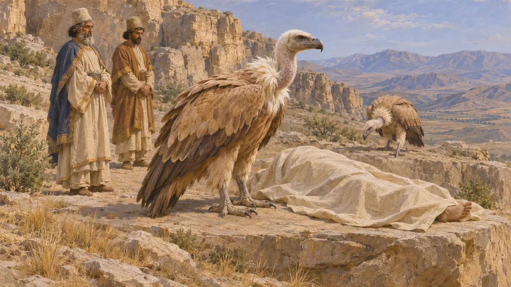
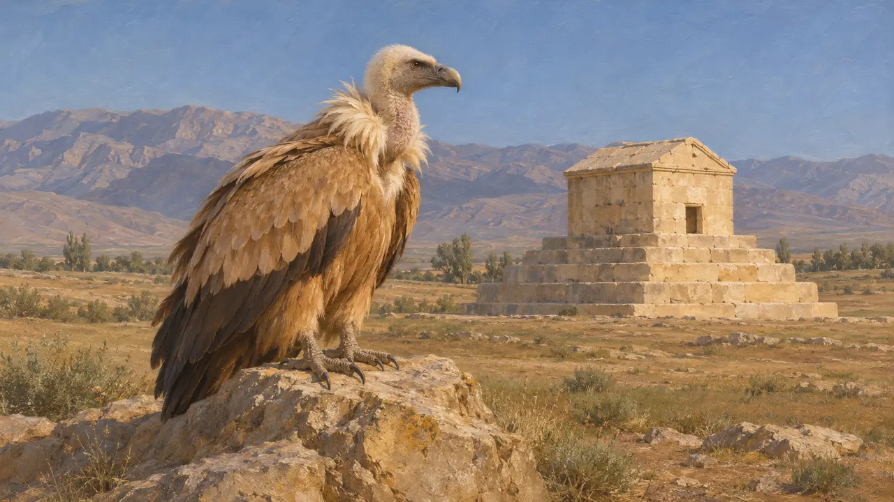
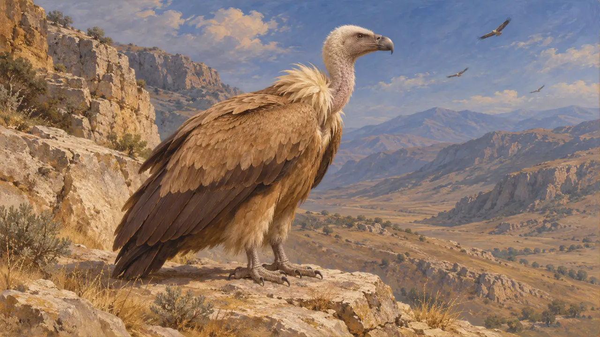

الموسوعة › الحياة البرية والطقس

النسر الأسمر
طائر كبير يقتات على الجيف في المنحدرات والبراري المفتوحة؛ اليونان والبلاد الفارسية، القرنان السادس والخامس ق.م
في اللعبة: المستوى 1: ضريح المؤسس، المستوى 3: الكذب، المستوى 4: المصطبة، المستوى 6: جسر القوارب، المستوى 9: القناة، المستوى 10: البوابات الحارّة، المستوى 11: الخاتمة
النسر الأسمر (Gyps fulvus) جارح كبير محلّق يقتات على الجيف ويعشّش في المنحدرات الصخرية. يعيش اليوم في البلاد الجبلية من اليونان وتركيا إلى إيران، ويرجَّح أنه عاش فيها في العصر الهخامنشي. لا يذكره الكتّاب القدماء في صلة بالدفن الفارسي، فالربط بينه وبين الموتى يقوم على إشارة هيرودوت إلى الطيور.
في اللعبة: تَرسم اللعبة النسور الأوراسية طيورًا تحلّق في السماء في مراحل آثوس وباغاستانا والإستر وبارسا وباسارغاد وبلاتيا وثرموبيلاي. وهي عنصر من المشهد فحسب، ولا تقرؤها أي قاعدة.

الطيور والموتى عند هيرودوت
رواية قديمةيقول هيرودوت إن الفرس كانوا يكتمون عاداتهم في الدفن، لكنه يعلم يقينًا أن المجوس كانوا يعرّضون الجثث لتمزّقها الكلاب أو الطيور. ويضيف أن الفرس كانوا يطلون الجثة عمومًا بالشمع قبل دفنها. ولا يسمّي الطيور نسورًا.
Herodotus 1.140

مدى ممارسة تعريض الموتى للجوارح
متنازع عليهيختلف المؤرخون في مدى ممارسة تعريض الموتى للجوارح في العصر الهخامنشي وفي من مارسه. وتدل المقابر الملكية المنحوتة في الصخر والمبنية في نقش رستم وباسارغاد على أن الملوك كانوا يُدفنون في أضرحة ولا يُعرَّضون للجوارح. أما برج الصمت الزرادشتي المتأخر فلا دليل عليه لهذه الفترة، ولا ينبغي إسقاطه على إمبراطورية قورش أو داريوس.
P. Briant, From Cyrus to Alexander, 2002

المصادر
- Herodotus 1.140
- P. Briant, From Cyrus to Alexander, 2002